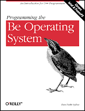

|  |
Programming the Be Operating SystemWriting Programs for the Be Operating System
By Dan Parks Sydow This book is out of print. |
Programming the Be Operating System
In PDF Format1. BeOS Programming Overview
Features of the BeOS
Structure of the BeOS
Software Kits and Their Classes
BeOS Programming Fundamentals
BeOS Programming Environment2. BeIDE Projects
Development Environment File Organization
Examining an Existing BeIDE Project
Setting up a New BeIDE Project
HelloWorld Source Code3. BeOS API Overview
Overview of the BeOS Software Kits
Software Kit Class Descriptions
Chapter Example: Adding an Alert to MyHelloWorld4. Windows, Views, and Messages
Windows
Views
Messaging5. Drawing
Colors
Patterns
The Drawing Pen
Shapes6. Controls and Messages
Introduction to Controls
Buttons
Picture Buttons
Checkboxes
Radio Buttons
Text Fields
Multiple Control Example Project7. Menus
Menu Basics
Working With Menus
Multiple Menus
Pop-up Menus
Submenus8. Text
Fonts
Simple Text
Editable Text
Scrolling9. Messages and Threads
The Application Kit and Messages
Application-Defined Messages10. Files
Files and the Storage Kit
Using Standard Open and Save Panels
Onward
Return to: Open Books Project